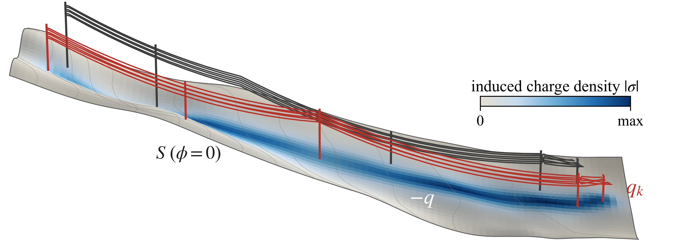
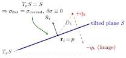
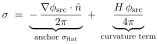
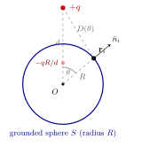
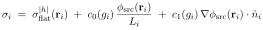

TL;DR A closed-form baseline carries the absolute scale of the induced charge, and small heads fed dimensionless features learn only the correction to it. An 8-parameter head trained on canonical shapes recovers 94.8% of the analytic curvature coefficient +1/(4π) on average over three training seeds. On 15 lines over 7 terrain tiles, each tile held out in turn, a 1,250-parameter head trained on dense-solver labels lowers the median induced-voltage error, as a fraction of the source potential, from 5.41% to 1.88%. The application supports wildfire mitigation, through the voltage induced on de-energized lines.
Abstract
Analysing electrostatic induction on transmission lines in real-world power distribution systems requires the induced surface charge density σ on overhead-line corridors at deployment scale. Dense direct boundary-element method (BEM) solvers for the Laplace boundary integral equation (BIE) cost O(N2) memory and O(N3) time. Fast multipole solvers are near-linear per solve but still need a mesh, singular quadrature and an iterative solve. A recipe is presented for training cheap surrogates of partial differential equations from canonical closed forms (flat ground, grounded sphere) and a few dense-solver labels beyond them. The surrogates are supervised against the closed forms because the natural self-supervised alternative, learning the layer-potential operator Aθ and minimising the BIE residual, admits non-physical solutions through a rescaling degeneracy between Aθ and σ, even on canonical geometries. A small neural correction to a closed-form local-tangent-plane baseline is trained against the 2-term identity σ = −(∇φ·n̂)/(2π) + Hφ/(4π), exact on flat ground and the grounded sphere (Theorems 2 and 3), using SE(3)- and scale-invariant dimensionless features derived from this identity. An 8-parameter linear head (seed 0) recovers 98.3% of the analytic curvature coefficient +1/(4π) from data, and 89.1% and 97.0% with seeds 1 and 2, so after training it is the 2-term identity with a fitted coefficient. On a synthetic curved patch, where no closed form exists, its relative root-mean-square error in σ against dense BEM is 2.0%, and on the grounded sphere it stays at 1.2% for positive and 1.4% for negative source charges spanning 12 orders of magnitude. This scale invariance comes from the non-dimensionalised representation. DeepONet, Set Transformer, and Fourier neural operator (FNO) baselines lack it on raw dimensional inputs, and FNO and DeepONet acquire it with this representation. A heuristic scale (Proposition 1) indicates when this identity applies. Beyond these geometries, a second head, exactly linear in the charges with coefficients learned from the local terrain shape, is trained on a few dense-BEM solutions. On 15 industrial transmission lines over 7 independent terrain tiles, each tile held out in turn, this corridor head attains a median induced-voltage error of 1.88% of the source potential along a parallel victim path, compared with 5.41% for the closed-form baseline, and a median σ error against dense BEM of 6.44%, compared with 7.73%. It has 1,250 parameters (5.0 kB) and runs in seconds on one CPU core at O(104) surface vertices (cost O(NK) for K charges).
Method



- Terrain points and source charges
- Local quadratic fit: normal n̂, curvatures H, K, residual ρ, scale L
- Anchor σflat and seven dimensionless features
- Small head gives δσ
- σ = σflat + δσ
Anchor. For every surface point, σflat is the image-charge density of the point's own tangent plane. It is exact on any plane and approximate where the terrain is only locally flat (Theorem 2). It carries the absolute scale of the solution and costs O(NK) for N points and K charges, with no matrix, mesh connectivity or linear solve.
Curvature term. On a grounded sphere, adding Hφsrc/(4π) to the anchor gives the exact Kelvin solution. On other smooth terrain the leading-order correction is κ⊥φsrc/(4π), with κ⊥ the normal curvature along the level lines of φsrc, and its average over directions is again Hφsrc/(4π).
Features. Seven dimensionless ratios: the source field (φsrc and its normal and tangential gradients), the local shape (mean and Gaussian curvature, fit residual) and the bilinear Hφsrc, scaled by the local length L and by Qref = max|qk|. The normal, curvatures and residual come from a quadratic fit to the 30 nearest vertices. With unique nearest neighbours, the features are unchanged by translations, rotations about the vertical and a joint rescaling of positions and charges by positive factors, so a model trained at one charge scale keeps its accuracy at any other.
Supervision. The target is a closed form where one exists and a dense boundary-element label elsewhere. Learning the operator from the BIE residual instead is degenerate: the residual cannot tell (A, σ) from (cA, σ/c). Trained at the σ network's learning rate for 200k steps, the learned kernel ends 86% away from 1/r.
Two heads. An 8-parameter linear head tests whether the closed-form coefficient can be learned from data. The model for real terrain is an additive head with 1,250 parameters, exactly linear in the charges. A 3→32→32→2 ReLU multilayer perceptron maps the local shape gi = (HiLi, KiLi2, ρi/Li), which does not depend on the sources, to the coefficients of two source channels added to the sign-correct anchor σflat|h|:

The identity on a grounded sphere
A charge q sits at distance d from the centre of a grounded sphere of radius R. The anchor treats each surface point as if its tangent plane were the whole ground. Beyond the horizon seen from the charge, where the charge lies below the tangent plane, it even has the wrong sign. Adding the curvature term Hφsrc/(4π), with H = −1/R, gives the Kelvin density at every point and every distance. The curves are computed in the browser from the closed forms.
Results
Scale invariance over 12 orders of magnitude of charge
Relative RMS error in σ against the magnitude of the test charge. The supplementary code evaluates the paper's checkpoints for (a) and (b) and retrains the networks of (c). Training charges are drawn from N(0, 1), and the shaded band 0.3 ≤ |q| ≤ 3 holds 76% of them. Blue curves use the dimensionless features and the anchor. Orange curves use raw inputs, or the same models with the charge scale Qref pinned instead of computed.
- (a) Flat ground. From |q| = 1 to 10−12 the errors of the raw-input networks grow by 7.4 (DeepONet), 10.3 (Set Transformer) and 12.0 (FNO) orders of magnitude. Charge augmentation lowers the FNO curve but keeps its slope. The error of the 8-parameter head stays within 0.11% at every tested magnitude. The anchor is exact on a plane, so this panel tests scale invariance rather than accuracy.
- (b) Grounded sphere. On the paper's discretised test cap, the head's error is 1.2% for positive and 1.4% for negative charges at every magnitude, 41 and 34 times lower than that of the anchor alone (49%). With the exact coefficient 1/(4π) the error is 1.0%, which comes from the discretisation of the cap.
- (c) Same networks, dimensionless inputs. Given the dimensionless features and the anchor, the errors of FNO and DeepONet no longer grow by orders of magnitude as |q| falls. Pinning Qref brings back the slope of −1. Scale invariance comes from the representation, not the architecture.
Data
Real terrain: 15 lines on 7 held-out terrain tiles
The corridor model is the additive head. The 15 lines sit on 7 independent terrain tiles. Each tile is held out in turn, the head is trained on the dense-BEM solutions of the lines on the other six tiles with the lines weighted equally, and each line's error is the mean over three seeds. εV is the RMS error of the potential that σ induces along a victim path parallel to the line, 30 m to the side and at least 10 m above the terrain, as a fraction of the RMS source potential. The median εV falls from 5.41% for the anchor to 1.88% for the head, lower on all 15 lines, and the median relative RMS error in σ from 7.73% to 6.44%, lower on 14 of them. From two training tiles on, the median held-out εV stays between 1.78% and 1.92% (seed 0).
Held-out error per line (Table 3 of the paper). Each row joins the anchor to the head, and the vertical lines mark the medians over the 15 lines. Letters A–G are the paper's names for seven of the lines.
Data
What the learned head sees
The head sees the terrain only through its local fit, within about 23 m of each point. Two terms of the Born series, an exact expansion of σ around the anchor σflat that needs no training, can be restricted to the terrain within a radius R of each point. At R = 25 m this is about the neighbourhood of the head's local fit. On the 9 lines whose charges all stay at least 12 m above the terrain, the head (1.29%) beats the two terms restricted to 25 m (1.89%) or 50 m (1.47%) on 8 of the 9 lines. With 400 m of terrain the two terms reach 0.26%: the error left by the head is carried by terrain beyond its neighbourhood.
Median εV over the 9 lines (Table 11 of the paper). Without a radius (∞) the two terms are less accurate than at 400 m, because the labels are solved on a truncated patch, which accumulates charge along its edges.
Data
Cost
| Dense BEM | Surrogate | |
|---|---|---|
| Storage at N = 10,908 | 0.95 GB (peak 2.25 GB) | no matrix |
| Time at N = 10,908, one CPU core | 11.5 s (assembly and a direct LU solve), 2.1 s (assembly and the iterative solver GMRES) | 1.5 s |
| Largest line | about 0.9 TB of matrix. The matrix-free label solve took 62 min on a GPU. | about 1 h on one core (extrapolated) |
The surrogate's cost is that of evaluating φsrc and its normal derivative, O(NK), so on the largest line it would take about an hour on one core, comparable to the 62 min of the matrix-free label solve on a GPU. Its advantage therefore lies in needing no matrix, mesh connectivity or linear solve.
Limitations
- The head is local. It cannot reach the part of the correction carried by terrain well beyond its neighbourhood. On the 9 lines whose charges all stay at least 12 m above the terrain, two Born terms given 200 m of terrain or more have the lower induced-voltage error on at least 8 of the 9 lines.
- Generalisation between tiles of real terrain is shown on 15 lines over only 7 independent tiles. The tile, not the line, is the unit of generalisation.
- Terrain detail finer than the grid of the terrain model changes σ by a median of 16% but the induced voltage by only 0.10% (indicative estimates on synthetic corridors, whose lines hang higher than the real ones). σ labels on real terrain are therefore uncertain at the ten-percent level and voltage labels much less so, which is why the evaluation leads with the voltage.
- Outside flat ground and the sphere the theory gives a leading-order term and a heuristic scale (Proposition 1), not a bound.
- The model treats the ground as a perfect conductor. At 60 Hz, for soils up to 104 Ω·m, this adds an error below 10−4 of the source potential.
Citation
@inproceedings{zsoldos2026sphere,
title = {From the Sphere to the Hill: Closed-Form Anchors for
Boundary-Integral Surrogates on Real Terrain},
author = {Zsoldos, Stephane and Morris, Therice and Sukhil, Varundev
and Wetherfield, Benjamin},
booktitle = {Advances in Neural Information Processing Systems},
year = {2026}
}